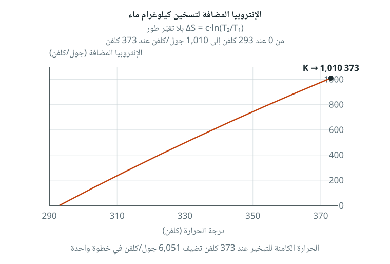

الإنتروبيا
Entropy
دالة حالة تقيس عدد الترتيبات الميكروية المتوافقة مع حالة عيانية واحدة؛ تُحسب من الحرارة المتبادلة مقسومة على درجة الحرارة في المسار العكوس، وتزيد في كل عملية حقيقية، فتحرّم تحويل الحرارة كلها إلى شغل.
الإنتروبيا خاصية حالة لا عملية. تُعرَّف في الديناميكا الحرارية الكلاسيكية بتكامل الحرارة العكوسة: ΔS = ∫δQ_rev/T، وتُعرَّف إحصائيًّا بعلاقة بولتزمان S = k_B ln W، حيث W عدد الحالات الميكروية المتوافقة مع الحالة العيانية الواحدة.
يتقابل التعريفان لأن الحرارة الداخلة تفتح حالات ميكروية جديدة: تسخين جسم يوسّع توزيع الطاقات، وتمدّد غاز في حجم أكبر يوسّع الفضاء المتاح. الاتجاه الذي لا يعود — حرارة من الساخن إلى البارد، وغاز يملأ وعاءً — هو الاتجاه الذي يزيد W، لا الذي ينقص الطاقة. لذلك لا تنقص إنتروبيا نظام معزول، وهذا القيد هو ما يحدّ الكفاءة، لا قلة الطاقة المتاحة.
الآلية
كيف يحدث الأمر على مستوى الجسيمات أو المتغيّرات المباشرة
الحرارة تنتقل من الساخن إلى البارد لأن الحالة المشتركة بعد التبادل تحمل عددًا أكبر من الترتيبات المتوافقة: طاقة موزّعة على الجسمين بدرجات متقاربة تُحصى بطرق أكثر من طاقة مركّزة في أحدهما. في مسار عكوس تُضاف الحرارة δQ عند درجة T فترفع S بمقدار δQ/T، لأن كل وحدة طاقة تُضاف إلى نظام عند تلك الدرجة تُوزَّع على الحالات المتاحة عندها.
في مسار غير عكوس (احتكاك، خلط، تمدد حرّ) لا يمكن سحب الطاقة بالطريقة نفسها، فتُنتج إنتروبيا إضافية S_gen أكبر من الصفر تساوي الحرارة غير المستردة مقسومة على درجة الحرارة. في محرك حراري تُطرح الحرارة Q_c في الخزّان البارد، فيكون مجموع تغيّري الإنتروبيا في الخزّانين موجبًا، وهذا الفرق هو ما يمنع إعادة كل الحرارة إلى عمل.
الأرقام والوحدات
العلاقات والوحدات والنطاقات العددية التي تسند الشرح
تُدمج الحرارة العكوسة على المسار. تسخين كيلوغرام ماء من 293 إلى 373 كلفن عند ضغط ثابت يضيف إنتروبيا مقدارها 4,186·ln(373/293) = 1,010 جول/كلفن، لأن السعة النوعية ثابتة عمليًّا في هذا المدى. انصهار الكتلة نفسها عند 273.15 كلفن يضيف 1,223 جول/كلفن.
تبخير الكتلة نفسها عند 373 كلفن يضيف 6,051 جول/كلفن، أي ستة أمثال إنتروبيا التسخين كله تقريبًا، لأن الحرارة الكامنة تُضاف عند درجة واحدة عالية فتُنتج أكبر زيادة في الحالات المتاحة. وثابت بولتزمان k_B = 1.380649×10⁻²³ جول/كلفن يحوّل عدد الحالات W في S = k_B ln W إلى وحدات حرارية؛ ولاحظ أن وحدة الإنتروبيا جول/كلفن، أي طاقة لكل درجة، لا طاقة.
الفرق الدقيق
المفهوم الملتبس الذي يُخلَط به، وأين ينفصلان
الخلط الشائع أن الإنتروبيا «مقياس الفوضى» بمعنى بصري. الترتيب البصري ليس مقياسًا: بلورة مرتبة ظاهريًّا قد تكون إنتروبياها أعلى من غاز في حجم صغير عند الدرجة نفسها إذا كثرت أنماط اهتزازها. التعريف الدقيق عدد الحالات المتاحة، والوصف البصري استعارة تُخطئ في الأجسام الصلبة والمخاليط.
الخلط الثاني مساواة الإنتروبيا بالطاقة. الإنتروبيا لا تُحرَق كالوقود ولا تُخزَّن في وعاء؛ هي سعة توزيع. والخلط الثالث: الإنتروبيا دالة حالة، أما الحرارة فليست كذلك؛ فلا يُقال «ارتفعت إنتروبيا الجسم لأنه استقبل حرارة» إلا بعد معرفة المسار، فقد يستقبل حرارة ويبذل شغلًا فتبقى إنتروبياه كما هي.
حدود التعريف
أين ينكسر التعريف أو النموذج وما الذي لا يفسّره
التعريف الإحصائي يفترض توازنًا تقريبيًّا وتجزئة خشنة للحالات؛ في نظام صغير جدًّا أو بعيد عن التوازن تتذبذب S وتفقد العبارة معناها المطلق. في أنظمة الانقلاب السكاني (الليزر) تُحسب للإنتروبيا قيمة سالبة لأن العدد في المستوى الأعلى أكبر، وهي أسخن من اللانهاية لا أبرد من الصفر المطلق.
في الأنظمة المفتوحة قد تنقص إنتروبيا النظام محليًّا (مبرّد، خلية حية) بشرط أن تزيد إنتروبيا المحيط بما يغطي الفرق. وفي الأنظمة ذات الجذب الذاتي (السدم، الثقوب السوداء) يخالف التعريف الحدّي الحدس المتعارف: إنتروبيا الثقب الأسود تتناسب مع مساحة أفق الحدث لا مع الحجم، ولا تُشتق من تعريف الغاز.

| الكمية | القيمة | المصدر |
|---|---|---|
| الإنتروبيا المضافة لتسخين 1 kg ماء من 293 إلى 373 كلفن | 1,010 جول/كلفن | [1] |
| الإنتروبيا المضافة عند تبخير 1 kg ماء عند 373 كلفن | 6,051 جول/كلفن | [1] |
| الإنتروبيا المضافة عند انصهار 1 kg جليد عند 273.15 كلفن | 1,223 جول/كلفن | [1] |
| ثابت بولتزمان k_B | 1.380649×10⁻²³ جول/كلفن | [3] |
المصادر
- 1 Entropy — OpenStax, University Physics Volume 2. openstax.org/books/university-physics-volume-2/pages/4-6-entropy · اطُّلع عليه 2026-11-16
- 2 Entropy — NASA Glenn Research Center — Beginner's Guide to Aeronautics. www1.grc.nasa.gov/beginners-guide-to-aeronautics/entropy/ · اطُّلع عليه 2026-11-16
- 3 CODATA Recommended Values of the Fundamental Physical Constants — NIST. physics.nist.gov/cuu/Constants/ · اطُّلع عليه 2026-11-16
استشهد بهذا المصطلح
الصيغتان مبنيتان من بيانات الصفحة نفسها: العنوان والتاريخ ورابط النسخة المنشورة.
الإنتروبيا — Entropy. (2026). ديوان المعرفة — انفراد. https://infiradev.com/diwan/terms/entropy.html
@misc{entropy2026,
title = {الإنتروبيا},
titleaddon = {Entropy},
howpublished = {{ديوان المعرفة — انفراد} — مرجع علمي عربي},
year = {2026},
url = {https://infiradev.com/diwan/terms/entropy.html},
urldate = {2026-11-16},
note = {مراجعة علمية: مراجعة آلية — ديوان المعرفة (روابط المصادر + عقد المحتوى + وجود الرسم) 2026-11-16}
}
راجعه: مراجعة آلية — ديوان المعرفة (روابط المصادر + عقد المحتوى + وجود الرسم) 2026-11-16 · 2026-11-16 · آخر تحديث 2026-11-16